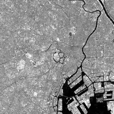
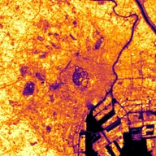
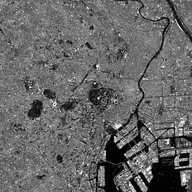
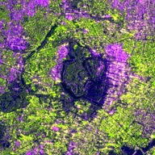
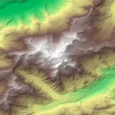
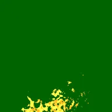
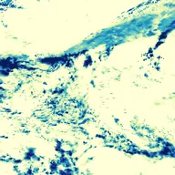

A compression benchmark for Earth observation data
Every codec paper measures on its own terms
One measurement is one array, in memory
The whole array goes to the codec in one call, on one thread. No files, no network.
How the protocol measures →click to step
27 corpora, from satellites to embeddings
Sentinel-23 corpora
Landsat 1 to 89 corpora



More sensors6 corpora




ERA55 corpora
Embeddings4 corpora
A corpus is a folder you can rebuild
corpora/s2-l1c-10m-4/ spec.md # source, samples, licence build.py # select and build the samples manifest.csv # asset, CRS, dates, bands, sha256 npz/ # the samples, from Hugging Face png/ # previews results.csv # one row per sample and codec environment.json # machine and versions of the run
Samples come ready
The first run downloads them from the Hugging Face dataset earth-compress/benchmark.
Or rebuild them
build.py fetches every source asset again and checks each sample against its sha256.
Results sit beside the data
So a new run shows up as a diff of results.csv.
Codecs see integers plus a scale and offset
When integers reproduce the published values bit for bit, the corpus stores them that way. Every codec starts from the same bytes.
Three modes, each with its promises
The promises in the protocol →click to step
The error budget comes from the data's own noise
Each corpus has a reference error sigma, from instrument noise, retrieval error or model spread. The bound tau is set from it.
Sigma and the bounds of every corpus →click to step
Codecs from GIS, imaging and science
lossless
Byte codecs, TIFF predictors, numeric codecs and OpenZL graphs.
- zstd
- deflate
- lzw
- hdiff-zstd9
- blosc
- pco
- openzl
- geozl
- jpeg2000
near-lossless
A bound on every value. Each codec at each budget level.
- geozl
- lerc
- jpeg-ls near
- sz3
- zfp
- sperr
- quant + any lossless
- safeguards + a codec
lossy
A bound on the RMS error. The setting may be searched.
- jpeg2000
- jpeg-xl
- sperr
- sz3
- quant + pco
Quantize then compress, or add safeguards to any codec. Both count as their own family.
Adding a codec is one Python module
# earthcompress/codecs/mycodec.py import mycodec from ..spec import ArraySpec from .base import lossless, unpack class MyCodec: def __init__(self, spec: ArraySpec): self.spec = spec def encode(self, array): return mycodec.compress(array.tobytes()) def decode(self, data): return unpack(mycodec.decompress(data), self.spec) CONFIGURATIONS = (lossless("mycodec", "mycodec", mycodec.__version__, MyCodec),)
Two methods
encode takes the array and returns bytes. decode gives the array back.
Found on its own
The runner loads every module in earthcompress/codecs/.
Bounded modes
FAMILIES for near-lossless and LOSSY for lossy. The codec receives tau.
Run it, then git diff
# get the benchmark git clone https://github.com/earth-compress/benchmark cd benchmark # every codec on one corpus uv run earthcompress corpora/s2-l1c-10m-4 # only yours uv run earthcompress corpora/s2-l1c-10m-4 --codec mycodec # against the published results git diff corpora/s2-l1c-10m-4/results.csv
First run
Downloads the samples of that corpus.
Written in place
Results go over the published results.csv. A run replaces only the rows of the configurations it measures.
With its machine
environment.json records the CPU, the platform and the versions.
Does the error matter for the task?
Three ways to take part
A codec →
One module that encodes and decodes. Run it on the corpora and send the new rows.
earthcompress/codecs/ mycodec.py
A corpus →
Samples anyone can rebuild, with a sigma for the error budgets.
corpora/<id>/ spec.md build.py manifest.csv
A use case →
A product people rely on, and a score that says when compression changed it.
usecases/<case>/ manifest.csv run.py
Open a pull request on github.com/earth-compress/benchmark.
uv run earthcompress corpora/s2-l1c-10m-4